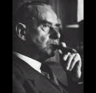
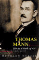
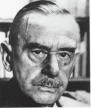
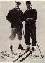

LA MONTAGNA INCANTATA: L'IMPONENTE COSTRUZIONE DI UN ROMANZO

La dimensione dell'organico ha, nel romanzo di Thomas Mann, una importanza di prim' ordine, e ciò in due sensi: innanzitutto perché, in generale, è data notevole importanza a certe caratteristiche organiche dei personaggi; poi anche perché tutte le tematiche affrontate dai personaggi (ed in particolar modo dal protagonista) nelle loro discussioni, o dal narratore nelle sue digressioni, sono ricondotte ad una sfera più che corporale, organica appunto, e ciò costituisce senza dubbio una delle particolarità e delle attrattive più interessanti della Montagna Incantata.
Le numerose tematiche affrontate all'interno di questo romanzo monumentale sono analizzate in maniera dialettica, tenendo conto di tutti i punti di vista e di tutte le possibili implicazioni; per farlo, il narratore "ascolta" ed interpreta le opinioni di tutti i personaggi principali, ognuno dei quali, significativamente, rappresenta un particolare punto di vista. All'interno di questo cerchio di personaggi, il protagonista funge da punto focale, dai quali si dipartono e in cui si riassumono tutti gli altri. Il giovane Hans Castorp, il "pupillo della vita" che tenta di assimilare e rielaborare le sue esperienze sulla montagna, che riveste perciò il ruolo dell'iniziato in un processo di formazione, è in realtà un personaggio d'eccezione, che giustifica da sé solo l'esistenza dell'intera vicenda e lega gli uni agli altri tutti i personaggi; essi vanno quindi considerati soprattutto in relazione a lui.
Il tema dell'organico è legato al protagonista in maniera assai forte. Egli infatti nutre un interesse tutt'altro che comune per il corpo ed in generale per tutto ciò che ha a che fare con l'uomo. Ed è proprio questo suo interesse cosciente e voluto, insieme alla sua volontà di capire e, per cosí dire, di assorbire tutto ciò che ha intorno, che permette lo sviluppo, all'interno della vicenda, di cosí numerose digressioni e riflessioni da parte dei personaggi e del narratore. In questo senso è necessario che la ricerca si sviluppi, da un lato, sulle tematiche organiche e, dall'altro, sul tipo di personaggio con cui il narratore si confronta, ovviamente senza dimenticare che le due cose sono intimamente legate.
Cominciamo dunque analizzando il rapporto tra narratore e personaggio.
RAPPORTO NARRATORE/PERSONAGGIO

Innanzitutto è importante definire, prima di ogni tentativo di analisi, il tipo di narratore con cui abbiamo a che fare nella Montagna Incantata: è esterno alla vicenda, parla in terza persona e si assume il compito di narrare la storia. Mediatore tra il lettore e la storia, è lui che ci presenta i personaggi. È vero che troviamo un caso interessante in cui un personaggio è presentato da un altro personaggio: si tratta della descrizione di Mynheer Peeperkorn fatta da Hans, ma esso rientra in un discorso diretto (un dialogo tra personaggi) ed il narratore riprende quasi subito in mano la gestione del racconto e si permette di giudicare il lavoro svolto dal personaggio (Era lasciata a lui [Hans] la briga di delineare un ritratto approssimativo del nuovo ospite inaspettato, e bisogna dire che fece un buon lavoro,... noi non avremmo potuto farlo molto meglio... Per integrare il suo intelligente schizzo ci sarebbe da aggiungere che...). Oltre al compito di presentare i personaggi, il narratore si assume anche quello di raccontarci, con l'ausilio di sapienti analessi o flash-back, il loro passato (l'esempio più evidente riguarda, ovviamente, il protagonista, il cui passato è narrato nel secondo capitolo). Per finire, il narratore non lesina di inframmezzare la narrazione vera e propria con considerazioni personali sugli avvenimenti e sulla natura ed il comportamento dei personaggi. Spesso e volentieri giudica il suo protagonista, e la narrazione è piena di espressioni quali: "il giovane Hans", "il nostro schietto eroe", ecc.
Tutto ciò permette di concludere che il narratore è di stampo nettamente tradizionale, onnisciente e con facoltà di giudizio, e che di fronte ai suoi personaggi egli goda di una imponenza indiscutibile.
Tuttavia, ad una analisi meno superficiale, la figura del narratore e la sua onnipotenza sono in qualche maniera messi in discussione. Ciò appare in alcuni passi in cui si rivela una sostanziale ambiguità di rapporto tra narratore e personaggio. Questi passi non sono numerosi e non bastano certo a cancellare l'impressione di trovarsi di fronte ad un romanzo tradizionale, ma possono essere interessanti proprio in virtù della loro scarsità, in quanto aprono una problematica all'interno dello stesso romanzo di tipo ottocentesco.
Il romanzo inizia con una premessa breve ma importante, in cui troviamo subito enunciata, tra le altre cose, la posizione che il narratore assume rispetto al suo protagonista. Fin dalle primissime righe del romanzo riscontriamo dunque una problematica che continua e si sviluppa in seguito lungo tutta la narrazione:
La storia di Hans Castorp che ci accingiamo a raccontare - non già per amor suo (il lettore troverà in lui un giovane semplice, ma simpatico) bensí per amore della storia che ci sembra altamente degna di essere narrata (e qui dovremmo pure far notare in favore di Hans Castorp che si tratta della storia "sua", ché non a tutti capitano tutte le storie)... [p. 3].
Il rapporto che si delinea fin dall'inizio, al di là delle apparenze, è complesso e non lineare. Il narratore sembra voler frapporre tra sé e il suo personaggio una distanza insieme lunga e breve, di distacco e insieme di coinvolgimento. Egli avverte subito il suo lettore che avrà a che fare con un personaggio nettamente antieroico, con un uomo qualunque, e difatti durante le 1200 pagine del romanzo non smetterà quasi mai di ricordarglielo, sfruttando, per cosí dire, la sua onnipotenza nel giudicare, fare considerazioni, guidare il lettore, ecc. Tuttavia, in questo passo, ammette anche, immediatamente dopo, che esso non è del tutto "qualunque", che ha del merito pure lui, che insomma la storia non potrebbe essere narrata se quel personaggio non ci fosse, e non fosse precisamente cosí come è; e nonostante dica di non provare particolare affetto per lui, nel corso della narrazione risulta evidente come ciò sia vero soltanto fino ad un certo punto.
Questo passo del romanzo si ricollega ad un altro passo molto significativo, che si trova alla fine del romanzo e che perciò costituisce, insieme al primo, una sorta di cornice all'intera vicenda. È interessante notare infatti come il narratore riprenda alla fine del romanzo gli stessi concetti esposti al suo inizio:
Addio, Hans Castorp, schietto pupillo della vita! La tua storia è terminata. L'abbiamo narrata sino alla fine; non fu divertente né noiosa, fu una storia ermetica. L'abbiamo raccontata per se stessa, non per amor tuo, poiché tu eri semplice. Ma in fin dei conti era la storia tua; siccome è toccata a te, devi aver avuto una certa accortezza, e noi non neghiamo la simpatia pedagogica che ci prese nel narrarla... [p. 1208-9].
Ritroviamo la stessa ambigua volontà di allontanare e riavvicinare il personaggio, come se il narratore volesse negargli la forte personalità che invece il personaggio possiede (o almeno che acquista durante la vicenda). Ma questo passo è significativo anche per altre ragioni.
Innanzitutto, qui troviamo confermata un'idea che sorge continuamente durante la narrazione: il narratore si pone, di fronte al suo personaggio, in una posizione di "guida", confessa la sua "simpatia pedagogica" per lui. Un rapporto di questo tipo può far pensare ad un narratore con vena paternalistica, ma in realtà il rapporto N/P nella Montagna Incantata è assai più complesso. Il romanzo, definito dallo stesso Thomas Mann "un tentativo di rinnovare il Bildungsroman", può essere effettivamente considerato un romanzo di formazione, ma lo è soltanto in quanto il protagonista permette che lo sia. Le importanti figure di pedagoghi (Settembrini in primo luogo, poi Naphta, ed in un certo senso anche Peeperkorn) in realtà non hanno una giustificazione di esistenza se non nel quadro in cui si trova Hans. In altre parole, è Hans che provoca in ognuno di essi una vena "didattica". Ora, allargando questa considerazione dalla sfera diegetica alla sfera extra-diegetica, potremmo dire che il narratore subisce lo stesso tipo di attrazione, quasi di fascinazione, che gli altri personaggi provano per il protagonista.
Tutto ciò evidentemente toglie ad Hans la semplice etichetta di "uomo qualunque" che il narratore vorrebbe affibbiargli, e lo risolleva in una sfera in cui il personaggio riacquista tutta la sua dignità eroica, sebbene in un modo, è vero, alquanto nuovo. Il protagonista è un eroe perché è l'anima e la giustificazione di tutta la vicenda; egli rappresenta, come ho già detto, il punto focale in cui convergono tutti gli altri personaggi, quasi come se questi fossero incarnazioni dei vari elementi costitutivi della personalità altamente articolata di Hans. In questo senso potremmo dire che Hans rappresenta il luogo di incontro, di accettazione, di rielaborazione dialettica di tutte le esperienze e conoscenze che riempiono il romanzo. Lo stesso narratore è costretto ad ammetterlo; un passo significativo, in questo senso, è quello in cui Hans passeggia insieme agli altri personaggi:
...situazioni tese, diversità di carattere, persino tacite ostilità non mancavano beninteso tra loro, e noi stessi ci meravigliamo che il nostro poco importante protagonista abbia saputo tenerli uniti intorno a sé,... ce lo spieghiamo con una certa scaltra e giovanile bonomia del suo carattere per il quale ogni cosa era "degna di essere udita"; la potremmo anche chiamare colleganza, persino nel senso che non solo legava a lui le più disparate persone e personalità, ma fino ad un certo punto le legava addirittura tra loro [VII, 4, p. 976].
Di nuovo troviamo qui la volontà da parte del narratore di sminuire il suo personaggio (il nostro poco importante protagonista), ma anche l'ammissione del ruolo unificatore di Hans. Ciò che lo rende atto ad assumere un ruolo tanto importante è quella che si può definire la sua "capacità dialettica", cioè la sua disponibilità ad accogliere e rielaborare in sé le varie esperienze che fa e le varie personalità dei personaggi che incontra. Se il personaggio ad avere più apertamente una natura dialettica nel romanzo è senz'altro il piccolo Naphta, Hans in realtà supera anche costui, perché la sua capacità dialettica non si limita al solo livello concettuale (dominio privilegiato di Naphta e Settembrini), ma si estende a tutto il campo dell'umano. Cosí si spiega il suo interesse per materie tanto diverse: Hans è il punto di unione nel romanzo non solo dei personaggi, ma anche di tutti i temi affrontati, e degli ambiti ai quali appartengono (filosofia, politica, medicina, astronomia, botanica, anatomia, patologia, occultismo, teologia, musica, psicologia, ecc.).
Ritornando alla definizione che Mann ha dato del suo romanzo (un tentativo di rinnovare il Bildungsroman), si può capire meglio a quale tipo di personaggio appartiene Hans, e perché suscita nel narratore tanti sentimenti contrastanti. Tale definizione consta di due parti: innanzitutto, abbiamo il riferimento al Bildungsroman, che lega La Montagna Incantata ad una tradizione ben precisa, in cui il protagonista è un giovane che attraverso la vicenda va incontro a varie esperienze che gli fanno prendere coscienza della realtà e gli fanno maturare un certo rapporto con essa (e questa è la cosa più evidente, più immediata); poi, abbiamo il concetto di rinnovamento, che lascia per cosí dire al romanzo la possibilità di esplorare nuove vie. Sicuramente questo tentativo di rinnovamento va legato ad una serie di motivi, ma credo che tra questi possa figurare anche una particolarità del personaggio. In un certo senso infatti possiamo dire che se, da un lato, Hans Castorp va incontro ad un processo di formazione in qualità di personaggio-uomo, di "Hans", egli va incontro allo stesso processo anche in qualità di personaggio-eroe, di personaggio in sé. In altre parole, il romanzo di formazione è tale perché il giovane protagonista matura certe esperienze, ma anche perché il personaggio, nel corso della narrazione, si eleva al grado di eroe.
Qualche passo tratto dal testo può esplicare meglio il concetto. All'inizio del romanzo il narratore afferma, riguardo ad Hans:
Come si vede, badiamo a dire tutto quanto possa acquistargli simpatie, ma lo giudichiamo senza passione e non lo facciamo né migliore né peggiore di quanto non fosse. Hans Castorp non era né un genio né uno sciocco, e se per definirlo evitiamo il vocabolo "mediocre", lo facciamo per motivi che non hanno nulla a che vedere con la sua schietta persona, per rispetto cioè del suo destino, al quale incliniamo ad attribuire un certo significato superpersonale... ... Per aver voglia di svolgere un'attività notevole... occorre o una solitudine e intimità morale che si trova di rado ed è di natura eroica o una ben robusta vitalità. Né questo né quello era il caso di Castorp, sicché si dovrà pur dire che era mediocre, sia pure in un senso molto onorevole [II, 2, pp. 52-54];
senza parlare delle descrizioni iniziali in cui lo chiama, per dare un esempio, addirittura "figlio di papà, delicatuzzo". Benché il narratore sia in genere reticente e alquanto discreto nel dare giudizi troppo marcati, qui è chiaro che la sua opinione sul protagonista non corrisponde certo a quella che un narratore tradizionalmente ha per il suo eroe. Hans è presentato come una persona decisamente qualunque, e si ha talvolta persino l'impressione che il narratore lo giudichi con una lieve ironia. Ad esempio, sempre nel primo capitolo, quando Hans parla della sua giovinezza, il narratore non esita ad aprire questa parentesi : "nella mia giovinezza", disse. La venatura ironica è molto sottile, ma non per questo assente, e ci sono altri esempi, seppur poco appariscenti.
Durante il suo soggiorno nel sanatorio, tuttavia, Hans attira l'attenzione di vari personaggi, ed insieme ad essi è come se anche il narratore scoprisse le potenzialità del suo personaggio e si interessasse a lui, e non soltanto alla sua storia. Hans, il semplice borghese, assume i connotati di un "pupillo della vita", di un "joli bourgeois à la petite tache humide", di un personaggio degno di andare incontro ad un processo di formazione. Lo stesso Hans riassume questa sua esperienza a Clavdia con le seguenti parole:
"Io per natura non sono certo un homme de génie, come non sono una "statura", Dio mio, no. Ma poi il caso - chiamalo caso - mi ha portato molto in alto, in queste regioni geniali... Insomma, tu forse non sai che esiste una pedagogia alchimistico-ermetica, una transustanziazione, e precisamente verso l'alto, un potenziamento dunque, se il tuo pensiero mi segue. S'intende però che una materia adatta a essere spinta e costretta da influssi esterni a salire verso l'alto deve in partenza possedere qualche predisposizione. La mia - lo so benissimo - consiste nell'avere da gran tempo una certa familiarità con la malattia e con la morte e dall'essermi fatto prestare irragionevolmente, fin da ragazzo, una matita da te..." [VII, 4, pp. 1004/5].
Il linguaggio un po' ingarbugliato di Hans, frutto di una discussione con Naphta, nasconde una quantità di significati. Innanzitutto, troviamo ribadito, stavolta dallo stesso personaggio, ciò che il narratore ci dice di lui in quella che ho chiamato la "cornice" del romanzo : cioè che Hans è un uomo comune, quasi banale, che però in fondo ha il merito di avere saputo "vivere" una storia importante. Ma troviamo anche una metafora che funziona per l'intero romanzo: il salire in alto come metafora della Bildung (e non può essere un caso se la vicenda è ambientata su una montagna e se il titolo stesso del romanzo è, appunto, la Montagna Incantata). Vi è poi l'interessante accenno all'alchimia, all'ermetismo e alla pedagogia, uniti nelle parole di Hans in una sola espressione (pedagogia alchimistico-ermetica), densissima di significati. In essa è sintetizzato il senso primo dell'intero romanzo, il processo di formazione, ed Hans si presenta cosí come il giovane che deve essere iniziato alla scienza alchimistica, cioè a quella scienza che studiava le trasformazioni della materia, con l'unica differenza che in questo caso la materia in questione è lui stesso (è lui che "sale", che ha raggiunto le alte "regioni geniali"). Dunque se Hans si affretta a dire che non è un "homme de génie", in realtà egli, con il suo processo di formazione, con la sua "transustanziazione", si rende proprio tale. Riguardo al concetto di "ermetismo", meno chiaro ma molto importante perché il narratore definisce la storia di Hans "una storia ermetica" , è forse utile rifarci alla conversazione di Hans e Naphta, dove per la prima volta esso appare. La parola "ermetico" rientra qui in un discorso più generale sui riti di iniziazione della massoneria che Naphta paragona a quelli dell'alchimia. Ma nella testa di Hans essa acquista una portata molto vasta: "È una vera parola magica, ricca di associazioni a largo raggio" : la prima di queste associazioni si rifà alle conserve chiuse ermeticamente, in cui la materia è sottratta al tempo; poi, già nel discorso di Naphta, essa ha un legame con la tomba, la morte, la putrefazione; ed infine si collega al tema della pedagogia e dell'iniziazione. Se per il narratore la storia di Hans è ermetica, è evidente che ci dobbiamo rifare a queste tre accezioni del termine e unirle tutte insieme per capire che cosa intenda dire: sarà dunque una storia sottratta al tempo (e difatti il tema del tempo è un altro tema "portante" del romanzo) con un personaggio che rimane in qualche modo sospeso al di fuori della dimensione temporale (Hans perde progressivamente la coscienza del passare del tempo), una storia in cui il tema della morte e della degenerazione organica ha un peso importante e in cui il protagonista vive una iniziazione che passa anche attraverso la conoscenza del corpo e della morte (" la via dei misteri e della purificazione è irta di pericoli, conduce attraverso angosce mortali, nel regno della putrefazione, e l'apprendista, il neofito, è il giovane avido di conoscere i miracoli della vita, di essere portato alla demoniaca capacità d'esperienza, guidato da individui mascherati che sono soltanto ombre del mistero " ci dice appunto Naphta, e qui sembra veramente di sentirlo parlare non in generale, ma precisamente di Hans).
Hans dunque non è più "un giovane semplice, ma simpatico", ma è proprio "il giovane avido di conoscere i miracoli della vita, di essere portato alla demoniaca capacità d'esperienza", ed è evidente che diventa un personaggio ben più importante di quanto il narratore ci voglia far credere, perlomeno inizialmente. E difatti per lui il narratore, alla fine, confessa una "simpatia pedagogica" e dell'affetto (...potrebbe anche indurci a passare delicatamente un polpastrello sull'angolo di un occhio al pensiero che non [lo] rivedremo e non [lo] ascolteremo in avvenire - VII, 10, p. 1209), e di lui dice, nel suo commiato, che "avventure della carne e dello spirito hanno potenziato la [sua] semplicità, [gli] hanno permesso di superare nello spirito ciò che difficilmente [potrà] sopravvivere nella carne".
Il rapporto "ambiguo" tra narratore e personaggio principale si rivela ora in tutta la sua complessità: il narratore da un lato vuole abbassare alla sfera del comune il suo personaggio, ma da un altro lato esso è troppo fortemente caratterizzato per non diventare, nel corso della narrazione, sempre più evidentemente un personaggio di spicco, un vero e proprio eroe di romanzo. Il narratore continuamente giudica Hans riponendolo in una dimensione quasi banale, ma del resto è solo grazie a lui, attraverso lui, che può affrontare un ventaglio tematico molto ampio (ciò che indubbiamente costituisce una delle attrattive maggiori della Montagna Incantata), e perciò anche il tema della corporeità e, ad un livello ancora più profondo, delle facoltà organiche.
Facoltà organiche del personaggio

Il tema delle facoltà organiche è importante nella Montagna Incantata, e precisamente a due livelli : in sé stesso, cioè per quanto riguarda la pura e semplice presenza di certe particolarità nei personaggi, e in rapporto alle altre tematiche affrontate nel romanzo. L'analisi delle facoltà organiche terrà conto di questa duplice faccia del problema, e terminerà con un accenno ad una delle dicotomie più importanti di tutto il romanzo, cioè la grande antitesi tra corpo e spirito.
Cominceriamo col passare in rassegna brevemente le principali facoltà organiche del personaggio che si riscontrano nel romanzo come pura "presenza", con l'ausilio di uno schema a punti:
Facoltà organiche legate al tema della malattia (polmonare)
Tema "portante" del romanzo, non si poteva non registrarne la presenza al livello puramente organico: troviamo accenni alla tosse, agli sbocchi di sangue, registriamo una presenza massiccia di passi relativi alla febbre, e ci sono date descrizioni di alcune particolarità o esperienze di malati più gravi, che Hans si reca a trovare o che conosce.
Rapporto morte/facoltà organiche
Il tema della morte è uno dei primi ad apparire nel romanzo. È un tema fondamentale perché lo stesso protagonista ha un rapporto particolare con esso (fin dalla sua infanzia) e tutte le sue esperienze sono in qualche modo permeate da questa presenza. Potremmo dire addirittura che Hans bambino scopre la presenza del corpo proprio attraverso la morte, allorquando perde il nonno, e che si apre cosí la problematica del rapporto tra corpo e spirito (dicotomia che ho già detto essere una delle principali della Montagna Incantata):
La morte era una faccenda pia, sensata e tristemente bella, cioè spirituale, e nello stesso tempo ben diversa, anzi contraria, molto corporea, molto materiale, che a rigore non si poteva definire né bella, né sensata, né pia, e nemmeno triste... ...Colui o, più esattamente, quella cosa che era lí distesa, non era dunque il nonno stesso, bensí un involucro.. che, Hans Castorp lo sapeva, non era fatto di cera, ma della sua propria materia; "soltanto" di materia : e questo era il particolare sconveniente e forse neanche triste.. cosí poco triste come non sono tristi le cose che hanno a che fare col corpo e "soltanto" con esso [II, 1, pp. 45/46].
Altre esperienze, stavolta sulla montagna, portano Hans ad approfondire il suo rapporto con la morte, e ciò avviene sempre attraverso il corpo. Uno dei momenti più interessanti è quello della visita radiologica. Hans vive l'esperienza della radiografia proprio come uno spiraglio dei vivi nel regno della morte:
E Castorp vide ciò che doveva pur aspettarsi di vedere, ma a rigore non spetta agli uomini, ed egli stesso non aveva mai pensato che gli sarebbe stato concesso: gettò uno sguardo sulla propria tomba. Vide in anticipo, grazie alla potenza della luce, la futura opera di decomposizione, la carne, che lo rivestiva, dissolta, distrutta, sciolta in una nebbia evanescente, e dentro a questa lo scheletro della sua destra finemente tornito...
Rapporto vita/facoltà organiche
Quasi a complemento del punto precedente, non possiamo omettere questo punto particolare, che sembra essere troppo generico ma che vuole riferirsi in realtà soprattutto a quel passo inserito nel cap. V, sez. 7 [p. 455 e seguenti], in cui Hans esplora, con l'ausilio di volumi di medicina, di fisiologia, di anatomia, di patologia, ecc., i misteri della vita. In questo passo la vita viene ricondotta alla sua forma corporea, ed è definita secondo le seguenti espressioni: "calore, il prodotto calorico di una sostanza sostenitrice di forme, una febbre della materia"; "l'impudenza della materia fattasi suscettibile ed eccitabile, la forma impudica dell'essere. È un segreto e sensibile agitarsi nel casto gelo del tutto, una furtiva e voluttuosa impurità di assorbimento alimentare e di eliminazione, un respiro secretorio di acido carbonico e di cattive sostanze di qualità e provenienza occulte"; "la malattia è la forma impudica della vita. E la vita a sua volta? È forse soltanto una malattia infettiva della materia...". Vediamo qui non soltanto ricondurre indagini di tipo filosofico alla base organica della questione, ma anche avvicinare il tema della malattia a quello della vita, in maniera assolutamente originale: la malattia non è infatti qualcosa che si "oppone" alla vita, qualcosa che ostacola le facoltà organiche dell'individuo, come normalmente si pensa, ma è essa stessa vita, è essa stessa, da questo punto di vista, "facoltà organica".
Rapporto amore/facoltà organiche
Il tema dell'amore è posto in relazione a quello delle facoltà organiche in due sensi: il primo, più immediato, è quello che riguarda il legame tra le emozioni e le facoltà organiche (cioè le conseguenze al livello corporeo delle emozioni), ed è qui che ritroviamo la stragrande maggioranza dei casi di alterazione del ritmo cardiaco, di alterazione della temperatura cutanea e di tremore; l'altro riguarda la maniera di riportare il tema dell'amore alla dimensione strettamente organica, e qui sta, una volta ancora, l'originalità della Montagna Incantata. Il tema dell'amore, infatti, ha alle spalle una lunga e forte tradizione che lo ha proclamato tema "elevato", quasi "divino", e la donna, la creatura che desta l'amore, è spesso stata ritratta come una creatura angelica da contemplare per la sua bellezza. È un po'semplicistico forse riassumere cosí una tradizione plurisecolare, ma ciò mette tanto più in evidenza la novità della Montagna Incantata, dove l'amore è sí amore per la bellezza, per una creatura diversa e irresistibilmente attraente come Clavdia, ma è anche amore per il suo aspetto organico. Hans è attratto dalla bellezza esteriore, potremmo dire cutanea, di Clavdia, ma è anche affascinato dalla bellezza interiore, organica del suo corpo. Nel passo sopra citato della riflessione di Hans sulla vita, l'immagine di Clavdia, simbolo della vita, gli appare proprio in termini dove l'aspetto idilliaco-poetico si mescola a quello medico-anatomico:
E vedeva l'immagine della vita, il florido edificio delle membra, la bellezza incarnata. Essa aveva staccato le mani dalla nuca, e le sue braccia aperte, sul cui lato interno, specie sotto la pelle delicata dell'articolazione del gomito, i vasi, i due rami delle grandi vene, apparivano di un colore azzurrino,... ...e, mentre languendo dal piacere e dallo sgomento le posava le mani sugli omeri, dove la pelle granulosa che riveste il tricipite era voluttuosamente fresca, sentí sulle labbra l'umido risucchio del bacio di lei [V, 7, pp. 475/6].
L'aspetto puramente organico dell'amore si rivela maggiormente in altri esempi. È molto interessante notare che la stessa dichiarazione di amore fatta da Hans a Clavdia, la notte di Carnevale, utilizza lo stesso tipo di discorso. Eppure, nonostante questo, il discorso rimane sospeso in un aura altamente poetica; e difatti l'organico, nella Montagna Incantata, è elevato ad argomento sublime.
Non è infine un caso se Hans chiede come ricordo a Clavdia, prima della sua partenza, il suo ritratto interiore, cioè la sua lastra radiografica, che " era senza volto, ma rivelava la tenera ossatura del suo busto, rivestita in un alone spettrale dalle morbide forme di carne, insieme con gli organi della cavità toracica... "
Quest'ultimo esempio della lastra ci rammenta ovviamente quello della lastra dello stesso Hans, e ci riconduce al tema della morte. Ciò non è affatto un caso, perché per Hans morte, amore, e corpo sono indissolubilmente uniti, ed è proprio il corpo ad essere l'anello di congiungimento tra la morte e l'amore:
"Oh, l'amour, tu sais... Le corps, l'amour, la mort, ces trois ne font qu'un. Car le corps, c'est la maladie et la volupté, et c'est lui qui fait la mort, oui, ils sont charnels tous deux, l'amour et la mort, et voilà leur terreur et leur grande magie!" [V, 9, p. 571].
Per finire, si può accennare, riguardo al rapporto tra l'amore e le facoltà organiche, al tema più specifico della malattia. La malattia ha dei rapporti con le facoltà organiche per le sue conseguenze al livello corporeo, e l'amore gioca molto su queste conseguenze: si tratta del problema affrontato dal dottor Krokowski nelle sue conferenze settimanali, significativamente intitolate "L'amore come potenza patogena''. Hans risponde esattamente a questo modo di intendere il rapporto tra amore e malattia: sappiamo che ha la febbre, che ha una zona umida nei polmoni e una vecchia cicatrice, e questo costituisce la sua malattia. Ma questo è anche ciò che secondo lui è dovuto all'amore:
"La fièvre de mon corps et le battement de mon coeur harassé et le frissonnement de mes membres, c'est le contraire d'un incident, car ce n'est rien d'autre... que mon amour pour toi... ... c'est de mon ancien amour pour toi que ces marques me restent que Behrens a trouvées dans mon corps, et qui indiquent que jadis aussi j'étais malade..." [V, 9, p. 570].
Rapporto libertà, morale/facoltà organiche (malattia)
Le facoltà organiche, e più precisamente le facoltà organiche nel loro rapporto con la malattia, hanno dei legami anche con i temi della morale e della libertà. Uno dei motivi principali del romanzo è infatti la libertà che la malattia dona all'individuo, il che ovviamente comporta una morale diversa da quella vigente tra i sani, in pianura. Fin dal suo arrivo Hans è stupito dalla leggerezza e spensieratezza dei malati del Berghof, e Joachim gli spiega che ciò deriva loro appunto dalla loro malattia. Anche la donna amata si distingue per il suo comportamento libero e trasandato, e anzi questo particolare è ciò che per primo porta Hans a confrontare la sua morale (da borghese, da "sano") con la morale di Clavdia, della malattia, e a propendere infine per la seconda. La malattia organica comporta dunque una libertà morale che si manifesta dallo stesso comportamento e portamento dell'individuo:
La Chauchat sedeva insaccata e floscia, con la schiena tonda, le spalle cascanti, e oltre a ciò sporgeva la testa in modo da far emergere le vertebre dalla scollatura posteriore... ... era evidente che il portamento sciatto della signora, il suo modo di sbattere la porta, l'indiscrezione dello sguardo dipendevano dalla sua malattia, anzi in essi si manifestavano l'eccessiva libertà... [IV, 6, p. 205].
Molto più avanti nella narrazione, quando Clavdia è già partita e ritornata, Hans ha un breve colloquio con lei e, in mezzo ad altre cose, parlano insieme di questo rapporto. A questo punto Hans ha già fatto molte esperienze, è già avanti nella sua Bildung, ha riflettuto su molti dei rapporti tra la malattia e l'individuo, ed è perciò in grado di legare questa problematica al concetto di genialità:
"...non sono una borghese indignata..."
"No, perché sei malata. La malattia ti dà la libertà. Essa ti rende... ecco, ora mi sovviene la parola che non ho mai usata! Ti rende geniale."
La malattia dunque, la quale non è altro che una manifestazione della preponderanza del corpo, influisce tutta la vita dell'individuo, persino la sua morale, la sua "filosofia di vita". Essa è principio geniale che rende all'uomo la sua libertà nel senso più ampio (libertà fortemente negata dalle convenzioni sociali vigenti in pianura), e tale libertà passa proprio attraverso la libertà del corpo (anch'esso fortemente soggetto ad una repressione nella società).
A chiusura di questa analisi è importante soffermarsi sul rapporto tra corpo e spirito; questo rapporto, come già detto, costituisce une delle più forti antinomie del romanzo. Intorno a questo problema si intavolano lunghe discussioni tra i vari personaggi; vedremo come Hans, punto focale di ognuna di esse, è colui che tenta una conciliazione tra i due poli opposti.
La problematica del rapporto corpo/spirito si apre fin dall'inizio del romanzo, quando Hans scopre che il suo cuore batte irregolarmente, senza ragione apparente:
"Sapessi almeno... perché il cuore mi batte cosí!... è inquietante, ci penso già da un pezzo. Ecco, si ha questa palpitazione nell'attesa di una grande gioia, o quando ci si angustia, nelle commozioni insomma, vero? Ma quando il cuore palpita da sé, senza motivo, dirò cosí per conto proprio, mi sembra sospetto, capisci, è come se il corpo andasse per vie proprie e non avesse più contatto con l'anima..." [III, 6, p. 117].
Una sensazione del genere desta sulle prime inquietudine:
"...c'è da essere inquieti e angosciati quando il corpo vive per conto suo e senza collegamento con l'anima e si dà grande importanza, come nel caso di questa palpitazione senza un motivo" [idem, p. 118].
Questo passo è più significativo di quanto non lo sembri in apparenza, e soprattutto perché si trova all'inizio del romanzo. Nella Montagna incantata infatti, come abbiamo visto, la dimensione corporea, organica occupa un posto di rilievo e si mescola alle altre tematiche del romanzo. Il fatto che già nel terzo capitolo si sottolinei l'importanza del corpo e della sua autonomia è, se cosí posso dire, un primo e breve assaggio di tutto quanto seguirà. Non è neanche un caso che Hans, in questo primo stadio del suo processo di formazione, sia "inquieto" e "angosciato" dallo scoprire che il corpo possa andare "per vie proprie". Infatti, egli è sempre ancorato ad una mentalità borghese, da "sano", ad una mentalità che vuole il corpo soggetto alla razionalità, al dovere, al lavoro, all'educazione; solo più tardi accoglierà in sé l'altra mentalità, quella della malattia. In un certo senso è come se la "montagna" avesse già influito sul corpo, liberandolo, dandogli una vita propria, mentre lo spirito, la razionalità fossero ancora da "educare", da "adattare" alla nuova vita. Il corpo qui è innovatore, lo spirito conservatore.
Il sanatorio è un luogo dove il rapporto tra corpo e spirito non può essere come negli altri posti. La malattia, infatti, è la giustificazione stessa dell'esistenza di questo luogo, ed è soprattutto per suo tramite che il corpo si palesa in maniera più evidente. Troviamo più di una volta espresso questo concetto nel romanzo: una volta attraverso le parole di Settembrini, il portavoce della razionalità e dello spirito (per il quale naturalmente la malattia è qualcosa di svilente per l'uomo):
"Un'anima senza corpo è altrettanto disumana e orrenda come un corpo senz'anima, e d'altronde la prima è una rara eccezione, la seconda la norma. Di norma è il corpo a preponderare, ad arraffare tutta l'importanza, la vita intera, e ad emanciparsi nel modo più sgradevole. L'uomo che vive malato è "soltanto" corpo, questa è la cosa disumana e umiliante..." [IV, 1, p. 163];
le altre volte da Hans, ormai sempre più ricettivo e addentro alla sua Bildung. Questo fatto vale anche per quanto riguarda la donna amata:
...il suo corpo, insomma, quel corpo indolente e potenziato, messo enormemente in risalto dalla malattia e reso, cosí, doppiamente corpo [V, 4, p. 381].
Come lo stesso Hans dice, parlando al cugino Joachim, il suo interessamento per il nuovo mondo con cui entra in contatto è il primo passo verso una comprensione, e dunque una accettazione di esso. Egli passa da una posizione da "sano", per cui il corpo deve sottostare a precise regole di comportamento, ad una posizione in cui l'accettazione dell'altra mentalità comporta una piena assimilazione, per cui Hans, ad un certo punto, si trova persino a propendere per la malattia, per il corpo dunque; ciò viene palesato durante una discussione con Settembrini, il quale lo ammonisce con l'auspicio
"...che lei non obbedisca fin troppo volentieri al corpo e alle sue male tendenze..."
" Che cosa ha da dire contro il corpo?" lo interruppe bruscamente Castorp guardandolo stupito con gli occhi azzurri, il cui bulbo era rigato di venine rosse. Era sopraffatto dalla propria temerità, e si vedeva [V, 5, p. 412].
Discussioni più imponenti di questa sono quelle tra Settembrini e Naphta, il gesuita dal "furore dialettico", che toccano vasti argomenti e tra questi anche la problematica del rapporto tra corpo e spirito, ed in cui i due si affrontano da posizioni diverse. Queste discussioni, concettualmente assai elevate, che presuppongono una cultura e una capacità di ragionamento, nonché di espressione, di un tipo che Hans non possiede, hanno tuttavia proprio lui per centro principale. Egli è il "nutrimento", per cosí dire, la giustificazione di questo "scontro" pedagogico da parte dei due pensatori. La più importante discussione in questione è quella narrata nel capitolo VI, sez. 6, dove vediamo come Hans assimili i diversi punti di vista riguardo al problema del corpo:
...disputavano intorno a questi principi con passione e accanimento, e spesso accadeva che non si rivolgessero l'uno all'altro, bensí a Castorp, e chi aveva la parola gli esponesse il suo argomento indicando l'avversario soltanto con la testa o col pollice. In mezzo fra loro, voltando la testa di qua e di là, egli approvava ora l'uno, ora l'altro...
e ne esprima anche uno proprio:
Si dica... quel che si vuole - e c'è senza dubbio qualcosa da dire, come, per esempio, che la malattia è una più alta condizione di vita, e ha quindi un che di festoso - , certo è che la malattia è un potenziamento del corpo, rinvia, per cosí dire, l'uomo interamente al suo corpo...
Discussioni di tal genere, che costituiscono senza dubbio un arricchimento per Hans, saranno tuttavia anch'esse superate. Il loro limite principale è che "i contendenti non solo si contraddicevano fra loro, ma erano anche in contraddizione con se stessi":
Ahimé, i principi e gli aspetti si stavano continuamente tra i piedi, di contraddizioni non c'era penuria, e la responsabilità di un non-militare si trovava in una cosí straordinaria difficoltà non solo di scegliere tra due contrari, ma sia pure di tenerli separati e puliti come due pezzi anatomici, che veniva la tentazione di buttarsi a capofitto nel "tutto moralmente disordinato" di Naphta. Era la grande confusione, quell'intrecciarsi di tutto...
Un limite di questo tipo è però anche la via per Hans di "sondare" altre possibilità, e di passare ad una posizione che, come detto anche nella prima parte di questo lavoro (Rapporto N/P), lo porta infine ad accogliere in sé tutte le esperienze, a sciogliere tutti i diversi punti di vista. Ed anche per quanto riguarda la dicotomia tra corpo e spirito egli tenta una riconciliazione. È la notizia che Joachim, dopo la sua partenza arbitraria, deve tornare al Berghof a stimolare Hans ad arrivare ad una tale conclusione:
"Uhm, quanta bassezza in tutto questo, quanto scherno! È un fatto antidealistico. Trionfo del corpo che ha voglie diverse da quelle dell'anima, e s'impone, a ludibrio degli esaltati che vengono a dire che è soggetto all'anima. Non sanno, pare, quel che dicono, poiché, se avessero ragione, un caso come questo getterebbe sull'anima una luce ambigua. Sapienti sat, so come la penso. La domanda che formulo io è precisamente questa: fin dove è errato contrapporre l'uno all'altra, fin dove invece fanno causa comune fra loro e giuocano una partita concertata? A questo gli esaltati non pensano, per loro fortuna" [VI, 8, p. 837].
Questo passo è poco messo in luce nel testo perché è inserito in un passo più generale dove Hans esprime la sua contentezza di rivedere Joachim. Alla luce però di tutto quanto ho detto sopra, esso appare proprio come una presa di posizione netta da parte di Hans sul problema corpo/spirito, benché sia formulata in modo assai più "discreto" delle posizioni di Settembrini e Naphta. Possiamo dire cosí che all'approssimarsi della fine della Bildung, Hans sia in grado di prendere una propria posizione riguardo al problema del corpo, problema che per lui si è sollevato con l'entrare in contatto col mondo dei malati, ma che da sempre si è presentato alla sua mente (vedi la morte del nonno).
I suoi studi di anatomia, biologia, ecc. da un lato, la sua attenzione a recepire gli stimoli esterni più interessanti dall'altro, lo portano a concepire una visione delle cose del mondo assolutamente unitaria, e non è forse un caso che ad un certo punto, in una delle tante discussioni, egli citi proprio Plotino, il filosofo per il quale la conoscenza non può che derivare da un processo di unificazione della molteplicità. Quando, ad esempio, piange per la morte del cugino, le lacrime per lui diventano un qualcosa dai molteplici significati, frutto della sua visione totalitaria delle cose:
...quel limpido umore che scorre cosí abbondante e amaro in tutto il mondo, a tutte le ore, sicché da esso fu denominata poeticamente la valle della terra; quel prodotto ghiandolare salso-alcalino che la scossa nervosa del dolore lancinante, sia fisico, sia psichico, spreme dal nostro corpo. Egli sapeva che contiene anche un po'di albumina [VI, 8, p. 903].
Non abbiamo qui una mera esposizione di conoscenze acquisite, ma proprio una scomposizione dei vari modi di considerare un fenomeno semplice come il pianto, cioè dal punto di vista poetico, medico, biologico, i quali rappresentano, considerati tutti insieme, il punto di vista umano.

Vediamo cosí come il processo di formazione termini quando il giovane eroe arriva ad elaborare un particolare rapporto con il mondo, e precisamente un rapporto per cui egli si rivela capace di riassumere in sé tutti i vari aspetti della realtà umana. È proprio in questo senso che è capace di portare alla luce ed integrare nella sua concezione dell'uomo anche la dimensione puramente organica, e ciò, come abbiamo sottolineato più volte, costituisce indubbiamente uno degli aspetti più interessanti della Montagna Incantata.
Questa importante capacità del protagonista ci conferma un'idea che abbiamo intuito analizzando il rapporto N/P, e cioè il fatto che Hans Castorp sia effettivamente un eroe a tutto tondo, o meglio, come lo diventi nel corso della narrazione. Egli assume pienamente i connotati del giovane che deve essere iniziato al mistero della pietra filosofale; mistero, questo, che non sta al di fuori dell'uomo, perché il mistero è l'uomo stesso. Come nell'alchimia, dove l'uomo tenta una trasformazione della materia, ma dove tale operazione necessita che anche l'uomo si purifichi, si renda degno della sua ricerca, anche Hans tenta di afferrare il mistero dell'uomo, rendendosi man mano sempre più degno della sua ricerca, più "puro", grazie alle "regioni geniali" della montagna, effettivamente incantata.